DKA TEAM
Las Siete Habilidades
A continuamente exitosa poseé.
1.- ¿Cuando empieza algo normalmente lo termina?
A veces
Dependiendo de la situacion
Definitivamente
2.- ¿Le gusta tomar la iniciativa?
No, es muy desgastante
Solo si no hay quien mas lo haga
Por supuesto
3.- ¿Normalmente defines prioridades?
No
A veces
Si
4.- En una conversacion en la que se esta tocando un tema que es de interes para ti.¿Que harias?
Prefiero no dar mi opinion con el fin de evitar confilicto
Intervengo en la conversacion con mi punto de vista absoluto
Me gusta oir las distintas ideas y compartir las mias
5.- En un proyecto en el cual se complican las cosas.¿Que prefieres?
Hacerme a un lado
Replantear de nuevo el proyecto y si mi continuidad es necesaria
Continuo sin importar lo que pueda pasar, incluso si hay perdidas